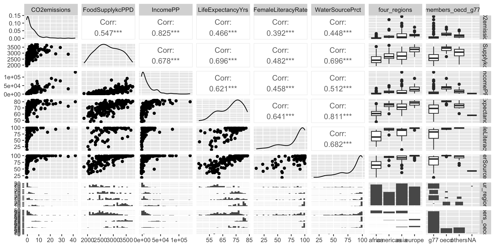
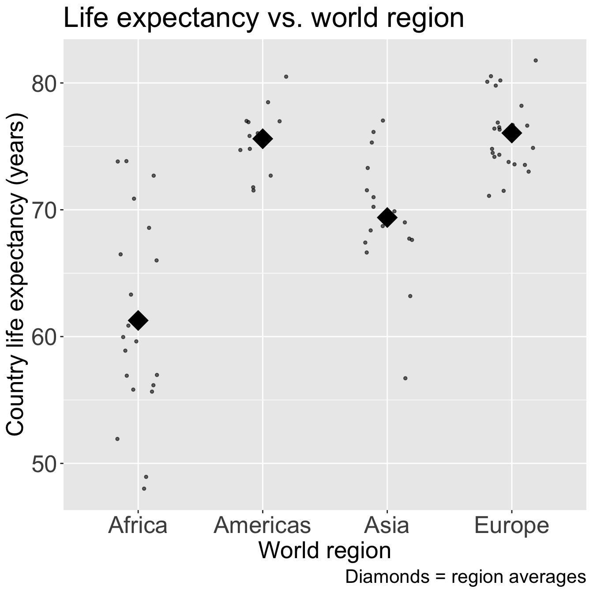
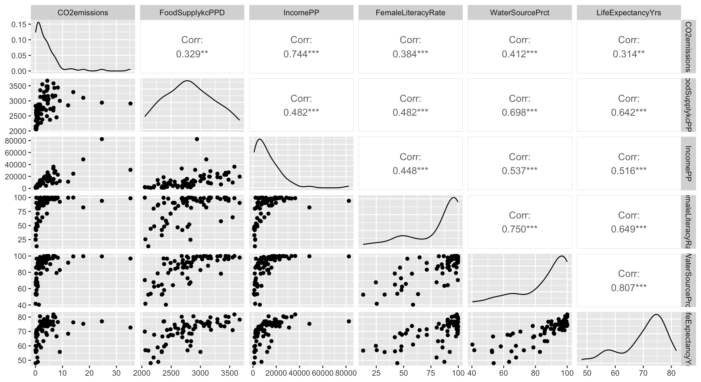

Lesson 13: Purposeful model selection
2024-03-04
Learning Objectives
Understand the overall steps for purposeful selection as a model building strategy
Apply purposeful selection to a dataset using R
Use different approaches to assess the linear scale of continuous variables in logistic regression
Regression analysis process
Model Selection
Building a model
Selecting variables
Prediction vs interpretation
Comparing potential models
Model Fitting
Find best fit line
Using OLS in this class
Parameter estimation
Categorical covariates
Interactions
Model Evaluation
- Evaluation of model fit
- Testing model assumptions
- Residuals
- Transformations
- Influential points
- Multicollinearity
Model Use (Inference)
- Inference for coefficients
- Hypothesis testing for coefficients
- Inference for expected \(Y\) given \(X\)
- Prediction of new \(Y\) given \(X\)
Learning Objectives
- Understand the overall steps for purposeful selection as a model building strategy
Apply purposeful selection to a dataset using R
Use different approaches to assess the linear scale of continuous variables in logistic regression
“Successful modeling of a complex data set is part science, part statistical methods, and part experience and common sense.”
Hosmer, Lemeshow, and Sturdivant Textbook, pg. 101
Overall Process
Exploratory data analysis
Check unadjusted associations in simple linear regression
Enter all covariates in model that meet some threshold
- One textbook suggest \(p<0.2\) or \(p<0.25\): great for modest sized datasets
- PLEASE keep in mind sample size in your study
- Can also use magnitude of association rather than, or along with, p-value
Remove those that no longer reach some threshold
- Compare magnitude of associations to unadjusted version (univariable)
Check scaling of continuous and coding of categorical covariates
Check for interactions
Assess model fit
- Model assumptions, diagnostics, overall fit
Process with snappier step names
Pre-step:
Step 1:
Step 2:
Step 3:
Step 4:
Step 5:
Step 6:
Exploratory data analysis (EDA)
Simple linear regressions / analysis
Preliminary variable selection
Assess change in coefficients
Assess scale for continuous variables
Check for interactions
Assess model fit
Learning Objectives
- Understand the overall steps for purposeful selection as a model building strategy
- Apply purposeful selection to a dataset using R
- Use different approaches to assess the linear scale of continuous variables in logistic regression
Pre-step: Exploratory data analysis
Things we have been doing over the quarter in class and in our project
I will not discuss some of the methods mentioned in our lab and data management class
- I am only going to introduce additional exploratory functions
A few things we can do:
- Check the data
- Study your variables
- Missing data?
- Explore simple relationships and assumptions
Pre-step: Exploratory data analysis: Check the data
Get to know the potential values for the data
Categories
Units
Then make sure the summary of values makes sense
- If minimum or maximum look outside appropriate range
- For example: a negative value for a measurement that is inherently positive (like population or income)

Pre-step: Exploratory data analysis: Check the data
Pre-step: Exploratory data analysis: Check the data
Look at a summary for the raw data
Typical use:
Note that
skim(gapm)looks different because I had to create factorsI am breaking down the
skim()function into the categorical and continuous variables only because I want to show them on the slides
Pre-step: Exploratory data analysis: Check the data
Variable type: numeric
| skim_variable | n_missing | complete_rate | mean | sd | p0 | p25 | p50 | p75 | p100 | hist |
|---|---|---|---|---|---|---|---|---|---|---|
| CO2emissions | 4 | 0.98 | 4.55 | 6.10 | 0.03 | 0.64 | 2.41 | 6.22 | 41.20 | ▇▁▁▁▁ |
| ElectricityUsePP | 58 | 0.70 | 4220.92 | 5964.07 | 31.10 | 699.00 | 2410.00 | 5600.00 | 52400.00 | ▇▁▁▁▁ |
| FoodSupplykcPPD | 27 | 0.86 | 2825.06 | 443.59 | 1910.00 | 2490.00 | 2775.00 | 3172.50 | 3740.00 | ▅▇▇▇▅ |
| IncomePP | 2 | 0.99 | 16704.45 | 19098.61 | 614.00 | 3370.00 | 10100.00 | 22700.00 | 129000.00 | ▇▂▁▁▁ |
| LifeExpectancyYrs | 8 | 0.96 | 70.66 | 8.44 | 47.50 | 64.30 | 72.70 | 76.90 | 82.90 | ▁▃▃▇▇ |
| FemaleLiteracyRate | 115 | 0.41 | 81.65 | 21.95 | 13.00 | 70.97 | 91.60 | 98.03 | 99.80 | ▁▁▂▁▇ |
| WaterSourcePrct | 1 | 0.99 | 84.84 | 18.64 | 18.30 | 74.90 | 93.50 | 99.07 | 100.00 | ▁▁▂▂▇ |
| Latitude | 0 | 1.00 | 19.11 | 23.93 | -42.00 | 4.00 | 17.33 | 40.00 | 65.00 | ▁▃▇▆▅ |
| Longitude | 0 | 1.00 | 21.98 | 66.52 | -175.00 | -5.75 | 21.00 | 49.27 | 179.14 | ▁▃▇▃▂ |
| population_mill | 0 | 1.00 | 35.95 | 136.87 | 0.00 | 1.73 | 7.57 | 24.50 | 1370.00 | ▇▁▁▁▁ |
Poll Everywhere Question 1
Pre-step: Exploratory data analysis: Study your variables
Started this a little bit in previous slide (
skim()), but you may want to look at things like:- Sample size
- Counts of missing data
- Means and standard deviations
- IQRs
- Medians
- Minimums and maximums
Can also look at visuals
- Continuous variables: histograms (in `skimr() a little)
- Categorical variables: frequency plots
Pre-step: Exploratory data analysis: Study your variables

Poll Everywhere Question 2
Pre-step: Exploratory data analysis: Missing data
- Why are there missing data?
- Which variables and observations should be excluded because of missing data?
- Will I impute missing data?
- Unfortunately, we don’t have time to discuss missing data more thoroughly
- I will try to cover this topic more thoroughly in BSTA 513
- For the Gapminder dataset, we chose to use complete cases
Pre-step / Step 1 : Explore simple relationships and assumptions
Poll Everywhere Question 3
Step 1: Simple linear regressions / analysis
For each covariate, we want to see how it relates to the outcome (without adjusting for other covariates)
We can partially do this with visualizations
Helps us see the data we throw it into regression that makes assumptions (like our LINE assumptions)
ggpairs()can be a quick way to do itggplot()can make each plot+ geom_boxplot()to make boxplots by groups for categorical covariates+ geom_jitter() + stat_summary()to make non-overlaping points with group means for categorical covariates+ geom_point()to make scatterplots for continuous covariates
We need to run simple linear regression
- We’re calling regression with multi-level categories “simple” even though there are multiple coefficients
Step 1: Simple linear regressions / analysis
Let’s think back to our Gapminder dataset
Always good to start with our main relationship: life expectancy vs. female literacy rate
- Throwback to Lesson 3 SLR when we first visualized and ran
lm()for this relationship
- Throwback to Lesson 3 SLR when we first visualized and ran

| term | estimate | std.error | statistic | p.value |
|---|---|---|---|---|
| (Intercept) | 51.438 | 2.739 | 18.782 | 0.000 |
| FemaleLiteracyRate | 0.230 | 0.032 | 7.141 | 0.000 |
Poll Everywhere Question 4
Step 1: Simple linear regressions / analysis
- Let’s do this with one other variable before I show you a streamlined version of SLR
Code
ggplot(gapm_sub, aes(x = four_regions, y = LifeExpectancyYrs)) +
geom_jitter(size = 1, alpha = .6, width = 0.2) +
stat_summary(fun = mean, geom = "point", size = 8, shape = 18) +
labs(x = "World region",
y = "Country life expectancy (years)",
title = "Life expectancy vs. world region",
caption = "Diamonds = region averages") +
theme(axis.title = element_text(size = 20),
axis.text = element_text(size = 20),
title = element_text(size = 20))
anova(model_WR) %>% tidy() %>% gt() %>%
tab_options(table.font.size = 40) %>%
fmt_number(decimals = 3)| term | df | sumsq | meansq | statistic | p.value |
|---|---|---|---|---|---|
| four_regions | 3.000 | 2,743.042 | 914.347 | 33.680 | 0.000 |
| Residuals | 68.000 | 1,846.077 | 27.148 | NA | NA |
Recall from Lesson 5 (SLR: More inference + Evaluation):
anova()with one model name will compare the model (model_WR) to the intercept model
Step 1: Simple linear regressions / analysis
If we do a good job visualizing the relationship between our outcome and each covariate, then we can proceed to a streamlined version of the F-test for each relationship
First, I will select the variables that we are considering for model selection:
- We need to make sure our dataset only contains the variables we are considering for the model:
Step 1: Simple linear regressions / analysis
Now I can run the
lapply()function, which allows me to run the same function multiple times over all the columns ingapm3For each covariate I am running:
lm(gapm2$LifeExpectancyYrs ~ x) %>% anova()- So I am fitting the simple linear regression and printing the ANOVA table with F-test (comparing model with a without the covariate)
$CO2emissions
Analysis of Variance Table
Response: gapm2$LifeExpectancyYrs
Df Sum Sq Mean Sq F value Pr(>F)
x 1 452.3 452.31 7.6536 0.007241 **
Residuals 70 4136.8 59.10
---
Signif. codes: 0 '***' 0.001 '**' 0.01 '*' 0.05 '.' 0.1 ' ' 1
$FoodSupplykcPPD
Analysis of Variance Table
Response: gapm2$LifeExpectancyYrs
Df Sum Sq Mean Sq F value Pr(>F)
x 1 1893.4 1893.44 49.168 1.188e-09 ***
Residuals 70 2695.7 38.51
---
Signif. codes: 0 '***' 0.001 '**' 0.01 '*' 0.05 '.' 0.1 ' ' 1
$IncomePP
Analysis of Variance Table
Response: gapm2$LifeExpectancyYrs
Df Sum Sq Mean Sq F value Pr(>F)
x 1 1220.3 1220.34 25.358 3.557e-06 ***
Residuals 70 3368.8 48.13
---
Signif. codes: 0 '***' 0.001 '**' 0.01 '*' 0.05 '.' 0.1 ' ' 1
$FemaleLiteracyRate
Analysis of Variance Table
Response: gapm2$LifeExpectancyYrs
Df Sum Sq Mean Sq F value Pr(>F)
x 1 1934.2 1934.24 50.999 6.895e-10 ***
Residuals 70 2654.9 37.93
---
Signif. codes: 0 '***' 0.001 '**' 0.01 '*' 0.05 '.' 0.1 ' ' 1
$WaterSourcePrct
Analysis of Variance Table
Response: gapm2$LifeExpectancyYrs
Df Sum Sq Mean Sq F value Pr(>F)
x 1 2988.2 2988.20 130.66 < 2.2e-16 ***
Residuals 70 1600.9 22.87
---
Signif. codes: 0 '***' 0.001 '**' 0.01 '*' 0.05 '.' 0.1 ' ' 1
$four_regions
Analysis of Variance Table
Response: gapm2$LifeExpectancyYrs
Df Sum Sq Mean Sq F value Pr(>F)
x 3 2743.0 914.35 33.68 1.858e-13 ***
Residuals 68 1846.1 27.15
---
Signif. codes: 0 '***' 0.001 '**' 0.01 '*' 0.05 '.' 0.1 ' ' 1
$members_oecd_g77
Analysis of Variance Table
Response: gapm2$LifeExpectancyYrs
Df Sum Sq Mean Sq F value Pr(>F)
x 2 1103.7 551.85 10.925 7.553e-05 ***
Residuals 69 3485.4 50.51
---
Signif. codes: 0 '***' 0.001 '**' 0.01 '*' 0.05 '.' 0.1 ' ' 1- We can scroll through the output to see the ANOVA table for each covariate
Step 1: Simple linear regressions / analysis
- We can also filter the ANOVA table to just show the p-value for each F-test
CO2emissions FoodSupplykcPPD IncomePP FemaleLiteracyRate
[1,] 0.007241207 1.187753e-09 3.557341e-06 6.894997e-10
[2,] NA NA NA NA
WaterSourcePrct four_regions members_oecd_g77
[1,] 1.148644e-17 1.857818e-13 7.55261e-05
[2,] NA NA NARow 1 is the p-value for the F-test
- This will help us in Step 2
Step 2: Preliminary variable selection
Identify candidates for your first multivariable model by performing an F-test on each covariate’s SLR
- Using p-values from previous slide
- If the p-value of the test is less than 0.25, then consider the variable a candidate
Candidates for first multivariable model
- All clinically important variables (regardless of p-value)
- Variables with univariate test with p-value < 0.25
- With more experience, you won’t need to rely on these strict rules as much
Step 2: Preliminary variable selection
From the previous p-values from the F-test on each covariate’s SLR
- Decision: we keep all the covariates since they all have a p-value < 0.25
CO2emissions FoodSupplykcPPD IncomePP FemaleLiteracyRate
[1,] 0.007241207 1.187753e-09 3.557341e-06 6.894997e-10
[2,] NA NA NA NA
WaterSourcePrct four_regions members_oecd_g77
[1,] 1.148644e-17 1.857818e-13 7.55261e-05
[2,] NA NA NAStep 2: Preliminary variable selection
- Fit an initial model including any independent variable with p-value < 0.25 and clinically important variables
init_model = lm(LifeExpectancyYrs ~ FemaleLiteracyRate + CO2emissions + IncomePP +
four_regions + WaterSourcePrct + FoodSupplykcPPD + members_oecd_g77,
data = gapm2)
tidy(init_model, conf.int = T) %>% gt() %>% tab_options(table.font.size = 30) %>%
fmt_number(decimals = 4)| term | estimate | std.error | statistic | p.value | conf.low | conf.high |
|---|---|---|---|---|---|---|
| (Intercept) | 37.5560 | 4.4083 | 8.5194 | 0.0000 | 28.7410 | 46.3710 |
| FemaleLiteracyRate | 0.0020 | 0.0352 | 0.0580 | 0.9539 | −0.0684 | 0.0725 |
| CO2emissions | −0.2860 | 0.1340 | −2.1344 | 0.0368 | −0.5539 | −0.0181 |
| IncomePP | 0.0002 | 0.0001 | 2.4133 | 0.0188 | 0.0000 | 0.0003 |
| four_regionsAmericas | 9.8963 | 2.0031 | 4.9405 | 0.0000 | 5.8909 | 13.9017 |
| four_regionsAsia | 5.7849 | 1.5993 | 3.6172 | 0.0006 | 2.5870 | 8.9829 |
| four_regionsEurope | 7.1421 | 2.6994 | 2.6458 | 0.0104 | 1.7442 | 12.5399 |
| WaterSourcePrct | 0.1377 | 0.0658 | 2.0928 | 0.0405 | 0.0061 | 0.2693 |
| FoodSupplykcPPD | 0.0052 | 0.0021 | 2.4961 | 0.0153 | 0.0010 | 0.0093 |
| members_oecd_g77oecd | −0.3317 | 2.5476 | −0.1302 | 0.8968 | −5.4259 | 4.7625 |
| members_oecd_g77others | 0.3341 | 2.2986 | 0.1453 | 0.8849 | −4.2622 | 4.9304 |
Step 3: Assess change in coefficient
- This is where we start identifying covariates that we might remove
I would start by using the p-value to guide me towards specific variables
- Female literacy rate, but that’s our main covariate
members_oecd_g77- Maybe water source percent?
Some people will say you can use the p-value alone
- I like to double check that those variables do not have a large effect on the other coefficients
| term | estimate | std.error | statistic | p.value |
|---|---|---|---|---|
| (Intercept) | 37.5560 | 4.4083 | 8.5194 | 0.0000 |
| FemaleLiteracyRate | 0.0020 | 0.0352 | 0.0580 | 0.9539 |
| CO2emissions | −0.2860 | 0.1340 | −2.1344 | 0.0368 |
| IncomePP | 0.0002 | 0.0001 | 2.4133 | 0.0188 |
| four_regionsAmericas | 9.8963 | 2.0031 | 4.9405 | 0.0000 |
| four_regionsAsia | 5.7849 | 1.5993 | 3.6172 | 0.0006 |
| four_regionsEurope | 7.1421 | 2.6994 | 2.6458 | 0.0104 |
| WaterSourcePrct | 0.1377 | 0.0658 | 2.0928 | 0.0405 |
| FoodSupplykcPPD | 0.0052 | 0.0021 | 2.4961 | 0.0153 |
| members_oecd_g77oecd | −0.3317 | 2.5476 | −0.1302 | 0.8968 |
| members_oecd_g77others | 0.3341 | 2.2986 | 0.1453 | 0.8849 |
Step 3: Assess change in coefficient
- Very similar to the process we used when looking at confounders
One variable at a time, we run the multivariable model with and without the variable
- We look at the p-value of the F-test for the coefficients of said variable
- We look at the percent change for the coefficient (\(\Delta\%\)) of our explanatory variable
General rule: We can remove a variable if…
- p-value > 0.05 for the F-test of its own coefficients
- AND change in coefficient (\(\Delta\%\)) of our explanatory variable is < 10%
Step 3: Assess change in coefficient
- Let’s try this out on
members_oecd_g77
Display the ANOVA table with F-statistic and p-value
| term | df.residual | rss | df | sumsq | statistic | p.value |
|---|---|---|---|---|---|---|
| LifeExpectancyYrs ~ FemaleLiteracyRate + CO2emissions + IncomePP + four_regions + WaterSourcePrct + FoodSupplykcPPD + members_oecd_g77 | 61.000 | 999.201 | NA | NA | NA | NA |
| LifeExpectancyYrs ~ FemaleLiteracyRate + CO2emissions + IncomePP + four_regions + WaterSourcePrct + FoodSupplykcPPD | 63.000 | 1,000.988 | −2.000 | −1.787 | 0.055 | 0.947 |
- \(\widehat\beta_{FLR, full} = 0.002\), \(\widehat\beta_{FLR, red} = 0.0036\)
\[ \Delta\% = 100\% \cdot \frac{\widehat\beta_{FLR, full} - \widehat\beta_{FLR, red}}{\widehat\beta_{FLR, full}} = 100\% \cdot \frac{0.002 - 0.0036}{0.002} = -74.41\% \]
- Based off the percent change, I would keep this in the model
Step 3: Assess change in coefficient
- Let’s try this out on water source percent (even though the p-value was < 0.05)
Display the ANOVA table with F-statistic and p-value
| term | df.residual | rss | df | sumsq | statistic | p.value |
|---|---|---|---|---|---|---|
| LifeExpectancyYrs ~ FemaleLiteracyRate + CO2emissions + IncomePP + four_regions + WaterSourcePrct + FoodSupplykcPPD + members_oecd_g77 | 61.000 | 999.201 | NA | NA | NA | NA |
| LifeExpectancyYrs ~ FemaleLiteracyRate + CO2emissions + IncomePP + four_regions + members_oecd_g77 + FoodSupplykcPPD | 62.000 | 1,070.944 | −1.000 | −71.744 | 4.380 | 0.041 |
- \(\widehat\beta_{FLR, full} = 0.002\), \(\widehat\beta_{FLR, red} = 0.034\)
\[ \Delta\% = 100\% \cdot \frac{\widehat\beta_{FLR, full} - \widehat\beta_{FLR, red}}{\widehat\beta_{FLR, full}} = 100\% \cdot \frac{0.002 - 0.034}{0.002} = -1561.06\% \]
- Based off the percent change (and p-value), I would keep this in the model
Poll Everywhere Question 5
Step 3: Assess change in coefficient
At the end of this step, we have a preliminary main effects model
Where the variables are excluded that met the following criteria:
- P-value > 0.05 for the F-test of its own coefficients
- Change in coefficient (\(\Delta\%\)) of our explanatory variable is < 10%
In our example, the preliminary main effects model (end of Step 3) was the same as the intiial model (end of Step 2)
Remaining slides under construction
Learning Objectives
Understand the overall steps for purposeful selection as a model building strategy
Apply purposeful selection to a dataset using R
- Use different approaches to assess the linear scale of continuous variables in logistic regression
Step 4: Assess scale for continuous variables
We assume the linear regression model is linear for each continuous variable
We need to assess linearity for continuous variables in the model
- Do this through smoothed scatterplots that we introduced in Lesson 6 (SLR Diagnostics)
- Residual plots (can be used in SLR) does not help us in MLR
- Each term in MLR model needs to have linearity with outcome
Three methods/approaches to address the violation of linearity assumption:
- Approach 1: Quantile method/Indicator variables
- Approach 2: Fractional Polynomials
- Approach 3: Spline functions
For our class, only implement Approach 2 or 3
Model at the end of Step 4 is the main effects model
Step 4: Assess scale for continuous variables

Step 4: Assess scale for continuous variables: Smoothed scatterplots
Only checking linearity, not addressing linearity issues
Can also identify extreme observations
- Which can influence the assessment of linearity when using fractional polynomials or spline functions
Plot the observed and smoothed values of outcome vs. continuous variable
Helps us decide if the continuous variable can stay as is in the model
- Problem: if not linear, then we need to represent the variable in a new way (Approaches 2-4)
Step 4: Assess scale for continuous variables: Smoothed scatterplots
In Gapminder dataset, we have 5 continuous variables:
- CO2 Emissions
- Food Supply
- Income
- Female Literacy Rate
- Water source percent
Plot each of these agains the outcome, life expectancy
Step 4: Assess scale for continuous variables: Smoothed scatterplots
Step 4: Assess scale for continuous variables: Smoothed scatterplots
Take a look at C02, Food Supply, and Income
CO2 = ggplot(data = gapm2, aes(y = LifeExpectancyYrs, x = CO2emissions)) +
geom_point() +
geom_smooth(se=F) + labs(x = "CO2 Emissions (kt)", y = "Life Expectancy (yrs)")
FS = ggplot(data = gapm2, aes(y = LifeExpectancyYrs, x = FoodSupplykcPPD)) +
geom_point() +
geom_smooth(se=F) + labs(x = "Food Supply (kcal PPD)", y = "Life Expectancy (yrs)")
Income = ggplot(data = gapm2, aes(y = LifeExpectancyYrs, x = IncomePP)) +
geom_point() +
geom_smooth(se=F) + labs(x = "Income (GDP per capita)", y = "Life Expectancy (yrs)")
grid.arrange(CO2, FS, Income, nrow=1)
- Food Supply looks admissible
- CO2 Emissions and Income do not look very linear, but I want to zoom into the area of the plots that have most of the data
Step 4: Assess scale for continuous variables: Smoothed scatterplots
Zoom into areas on plots with more data
CO2 = ggplot(data = gapm2, aes(y = LifeExpectancyYrs, x = CO2emissions)) +
geom_point() + xlim(0,10) +
geom_smooth(se=F) + labs(x = "CO2 Emissions (kt)", y = "Life Expectancy (yrs)")
FS = ggplot(data = gapm2, aes(y = LifeExpectancyYrs, x = FoodSupplykcPPD)) +
geom_point() +
geom_smooth(se=F) + labs(x = "Food Supply (kcal PPD)", y = "Life Expectancy (yrs)")
Income = ggplot(data = gapm2, aes(y = LifeExpectancyYrs, x = IncomePP)) +
geom_point() + xlim(0,40000) +
geom_smooth(se=F) + labs(x = "Income (GDP per capita)", y = "Life Expectancy (yrs)")
grid.arrange(CO2, FS, Income, nrow=1)- Food Supply still looks admissible
- CO2 Emissions and Income not linear: will address this!!
Step 4: Assess scale for continuous variables
Three methods/approaches to address the violation of linearity assumption:
- Approach 1: Quantile method/Indicator variables
- Approach 2: Fractional Polynomials
- Approach 3: Spline functions
Step 4: Approach 1: Quantile method/Indicator variables
Split a continuous variable into its quartiles
- Create dummy variables corresponding to each quartile
- Fit logistic regression with the dummy variables
- Plot quartile midpoints vs. coefficient estimates for the respective dummy variables
Disadvantages:
Takes some time to create new variables, especially with multiple continuous covariates
Start with quartiles, but might be more appropriate to use different splits
- No set rules on this
Advantage: graphical and visually helps
Step 4: Approach 1: Quantile method/Indicator variables
Take a look at the quartiles within the scatterplot
vline_coordinates= data.frame(Quantile_Name=names(quantile(gapm2$CO2emissions)),
quantile_values=as.numeric(quantile(gapm2$CO2emissions)))
CO2 = ggplot(data = gapm2, aes(y = LifeExpectancyYrs, x = CO2emissions)) +
geom_point(size = 1) +
#geom_smooth(se=F) +
labs(x = "CO2 Emissions (kt)", y = "Life Expectancy (yrs)") +
geom_vline(data = vline_coordinates, aes(xintercept = quantile_values),
color = "red", linetype = "dashed", size = .9)
vline_coordinates= data.frame(Quantile_Name=names(quantile(gapm2$IncomePP)),
quantile_values=as.numeric(quantile(gapm2$IncomePP)))
Income = ggplot(data = gapm2, aes(y = LifeExpectancyYrs, x = IncomePP)) +
geom_point(size = 1) +
#geom_smooth(se=F) +
labs(x = "Income (GDP per capita)", y = "Life Expectancy (yrs)") +
geom_vline(data = vline_coordinates, aes(xintercept = quantile_values),
color = "red", linetype = "dashed", size = .9)
grid.arrange(CO2, Income, nrow=1)
Step 4: Approach 2: Fractional Polynomials
Step 4: Approach 3: Spline functions
Learning Objectives
- Understand the overall steps for purposeful selection as a model building strategy
- Apply purposeful selection to a dataset using R
- Use different approaches to assess the linear scale of continuous variables in logistic regression
Step 5: Check for interactions
Create a list of interaction terms from variables in the “main effects model” that has clinical plausibility
Add the interaction variables, one at a time, to the main effects model, and assess the significance using a likelihood ratio test or Wald test
- May keep interaction terms with p-value < 0.05
Keep the main effects untouched, only simplify the interaction terms – locked!
Use methods from Step 2 (comparing model with all interactions to a smaller model with interactions) to determine which interactions to keep
The model by the end of Step 6 is called the preliminary final model
Step 6: Assess model fit
Assess the adequacy of the model and check its fit
Methods will be discussed later class
If the model is adequate and fits well, then it is the Final model
Next time
- More details on steps 4-6 on Monday before quiz!
Purposeful Selection